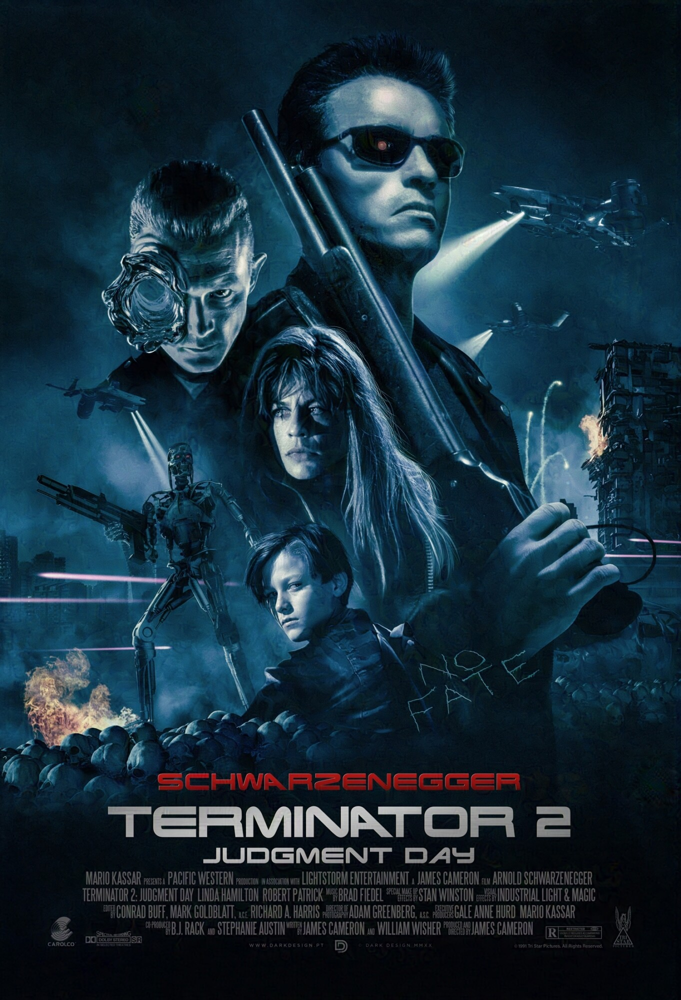
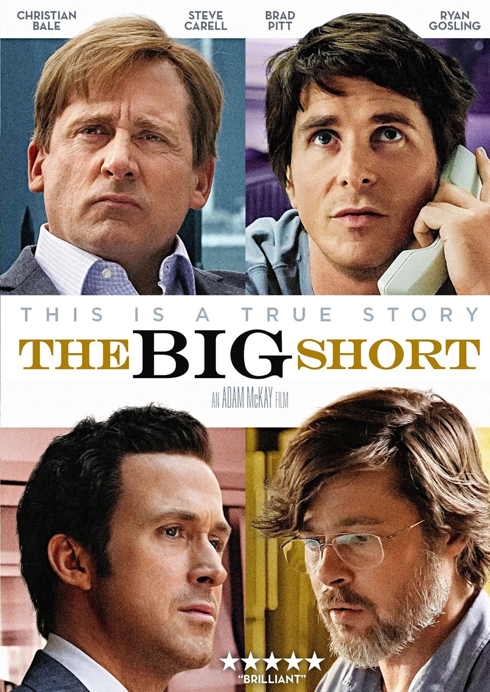

Series y Películas Favoritas

Terminator 2: El Juicio Final
Clásico de la ciencia ficción con Arnold Schwarzenegger

The Big Short
La historia de la burbuja inmobiliaria de 2008
Cómo Hackear a tu Jefe
Comedia sobre informáticos rebeldes